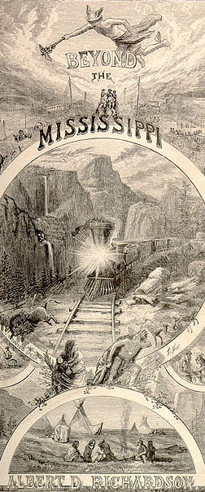

PART 2:
READING, WRITING & MAPPING THE WEST
Stephen Railton
, Dept. of English
MARK TWAIN IN HIS TIMES: AN ELECTRONIC ARCHIVE
"http://twain.lib.virginia.edu"

TWAIN ON THE WONDERS OF YOSEMITE
(1872)
MAPPING THE WEST IN WORDS & PICTURES
COMPLETING THE RAILROAD
(1869)
NELSON'S PICTORIAL GUIDE BOOK:
UNION PACIFIC RR
(1871)
MARK TWAIN ON THE "RENOWNED SOUTH PASS"
(1872)
BURTON ON THE SOUTH PASS
(1862)
YOSEMITE: SCENES OF WONDER & CURIOSITY
(1862)
BAYARD TAYLOR ON THE BIG TREES
(1862)
SOULE'S PHOTOGRAPHS OF YOSEMITE
(1870)
MORMONS HOMEPAGE
TWAIN ARRIVES IN SALT LAKE CITY
(1872)
BEADLE'S LIFE IN UTAH
(1870)
NELSON'S PICTORIAL GUIDE BOOK:
SALT LAKE CITY
(1871)
BOWLES' ACROSS THE CONTINENT
(1866)
CHINESE IN THE WEST HOMEPAGE
INDIANS HOMEPAGE
BEADLE'S UNDEVELOPED WEST
(1873)
RICHARDSON'S BEYOND THE MISSISSIPPI
EXCERPT FROM CROFFUTT'S TOURIST GUIDE
(1872)